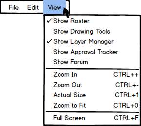

The final option under the Menu Bar is 'View.' This option allows the
user to toggle (on or off) any of the windows on the EClass program. As
shown below in Figure 1, only the Roster and Layer Manager are selected as
visible symbolized with the check next to their names. Drawing Tools and
Approval Tracker are not visible, symbolized by the lack of a check next to
their names. The 'View' drop-down menu also has various zoom options
in order to focus in on certain parts of a lecture or to show the entire
thing. Finally, there is a 'Full Screen' option to make the EClass
program take up the entire user's screen.

Figure 1: View drop-down menu.